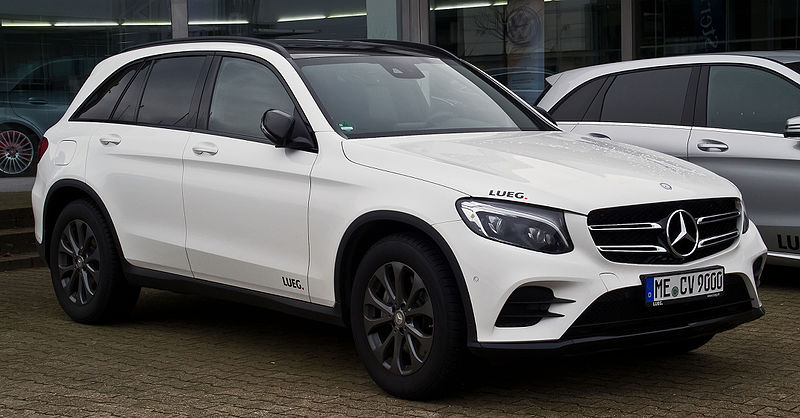

Mercedes A200 is a car with beautiful sporty exterior looks and comfortable seats made with man-made leather. This car provides luxury and a smooth driving pleasure in a hatchback model.

Following are the details of the car you can find in our store:
For more technical specifications Click Here!
Mercedes C200 Coupé is a car having athletic and sporty looks and provides ultra modern luxury on road. It has got elegant interiors touched with a sporty look.

Following are the details of the car you can find in our store:
For more technical specifications Click Here!
A beautiful sporty convertible by Mercedez-Benz. Its a 2 seater car having great comfort and a very fast retractable soft roof. Great for people who enjoy driving under open skies.

Following are the details of the car you can find in our store:
For more technical specifications Click Here!
Mercedes GLC 250 d is a beast of a car. With an all-wheel drive this car can take on any ascent. Its a powerfull car for all roads and excels in off-road driving.
Following are the details of the car you can find in our store:
For more technical specifications Click Here!
Feature Summary:
| Car Name | Model | Total Driven | Engine Type | Our Price** |
|---|---|---|---|---|
| Mercedes A Class (Hatchback) | 2017, A200 | 23,284 Km | 4 Cylinder Diesel Engine | $36,400 |
| Mercedes C Class (Coupé) | 2018, C200 | 5,648 Km | 4 Cylinder Petrol Engine | $49,700 |
| Mercedes SLC | 2018, SLC-180 | 7,468 Km | 4 Cylinder Diesel Engine | $64,600 |
| Mercedes GLC (SUV) | 2018, GLC-250 d | 9,276 Km | 4 Cylinder Diesel Engine | $76,300 |